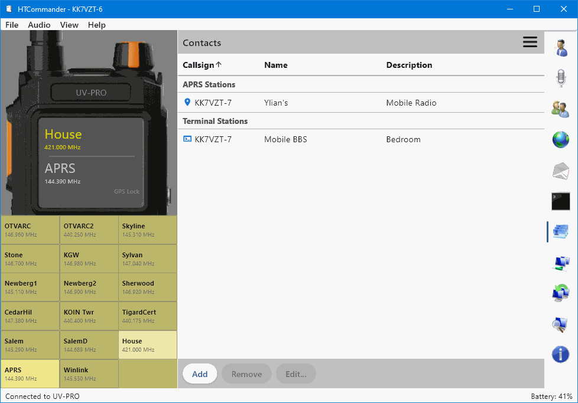
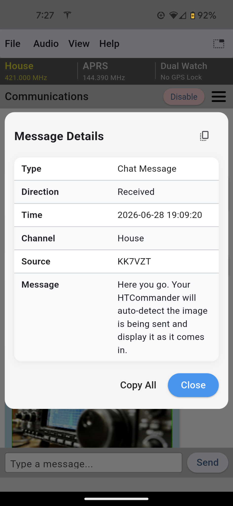
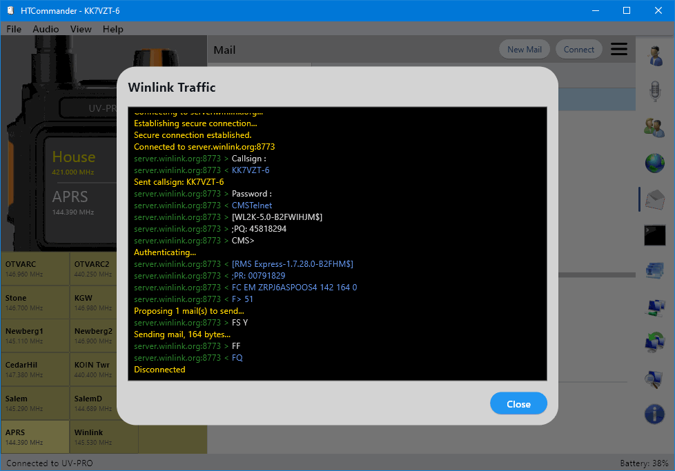

HTCommander packs a full station's worth of tools into one app. Here's what's available on each platform — and where to read the technical detail.
Windows · macOS · Linux · iOS · Android · Web
Configure, import, export and drag & drop channels to create the perfect configuration for how you operate — then push it to the radio in seconds.
Read the docs →
Receive and send APRS messages, set APRS routes, text ordinary phones over SMS, request weather reports, send authenticated messages and inspect the detail behind each packet.
Read the docs →
With OpenStreetMap support you can see all the APRS stations around you at a glance, follow position history and drill into any station.
Read the docs →
Send and receive email across the global Winlink network, including attachments, directly through your radio link.
Read the docs →
Communicate in packet mode with other stations, users and BBSes. Keep your APRS, Winlink and terminal contacts in a shared address book for quick access.
Read the docs →
Run a very basic bulletin board that also acts as a Winlink gateway, so nearby stations can reach the wider network through you.
Read the docs →
Many-to-many file exchange over 1200-baud FM-AFSK, letting an entire net share a file efficiently instead of one link at a time.
Read the docs →
Capture and decode packets with the built-in analyzer to see what's on the air, and use your radio's built-in GPS when your firmware supports it.
Read the docs →
Support for the proprietary short binary message protocol from Baofeng / BTech, so you can exchange the compact messages those radios expect.
Read the docs →
Windows · macOS · Linux · Android
Use the audio link to listen and transmit with your computer's speakers, microphone or a headset — no extra cabling.
Read the docs →
Send and receive images over SSTV. Reception is auto-detected, and you can drag & drop an image to transmit it.
Read the docs →
Windows · macOS · Linux
Convert incoming speech to text and turn typed messages into speech on air, hands-free.
Read the docs →
Route other applications' traffic over the radio using the AGWPE protocol, connecting your favorite packet software to your handheld.
Read the docs →